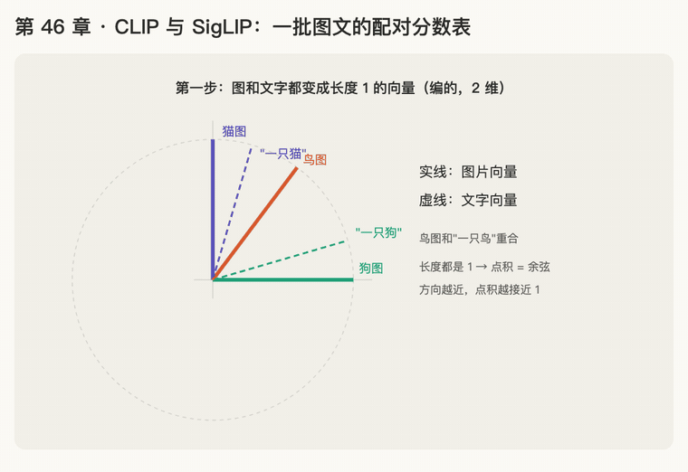

超越 Transformer · 讲义目录
英文名：Beyond Transformer · 在线阅读：https://wikieden.github.io/beyond-transformer/ · 前作：《从零读懂 Transformer》（24 章）
计划 51 章 · 8 段 · 每章一个动画（GIF + 可交互页面）· 已写第 1 章、第 44–51 章（视觉段整段，练习待做）· 19 张复习卡片
这本书讲什么
《从零读懂 Transformer》讲完了 2017 年的原版。可今天的大模型早就不是原版的样子了：训练要用 AdamW 和精心排过的学习率，LayerNorm 换成了 RMSNorm，位置编码换成了 RoPE，attention 加了 GQA、滑动窗口和 FlashAttention，FFN 变成了 MoE，有的模型干脆用 Mamba、线性注意力替掉一部分 attention，图片和视频也被切成小块送进同一套结构。这本书沿着这条路线，把 2017 年到现在每一处改动讲清楚：改了什么、为什么改、代价是什么。
- 适合谁：读完前作（或已经能看懂 AIAYN §3 的公式），想知道 LLaMA、Qwen、DeepSeek、Mixtral、Mamba、ViT、DiT 这些模型到底在原版上改了什么的人。
- 读完能做什么：能读懂现代大模型的架构论文和技术报告，能在自己写的 CS336 作业 1 模型上动手加 GQA、换位置编码、加 MoE、写分块注意力和线性注意力（每段结尾都有一个动手里程碑）。
- 怎么读：段 ②（第 1–5 章）和段 A（第 6–11 章）先读，做完 CS336 作业 1 再往后读；段 B–F 基本按顺序；段 V（视觉）可以和 C–F 穿插。
讲解的特点
和前作一样的讲法，再加上"现代模型"需要的几样东西：
- 一次一小步：白话类比 → 公式（每个符号说清楚怎么读）→ 小数字亲手算一遍。用到前作的知识时标出章号（如 T21），忘了可以点回去。
- 每章一个动画：关键原理做成可交互页面，能单步、能拖滑块（比如拖序列长度看 KV cache 怎么涨、拖窗口大小看感受野怎么变宽）。
- 对照原文：每章对应具体论文的章节和本地文本行号，引用原句；章节号没把握的先标"待核对"，写正文时核对。
- 讲清"为什么换"：每个新零件都和它替换掉的旧零件对比（Post-LN → Pre-LN、正弦位置编码 → RoPE、dense FFN → MoE、softmax attention → 线性注意力），说明换来了什么、付出了什么。
- 学完就动手：每段结尾对应一个里程碑（T-M0 到 T-M8），都在自己写的模型上改，用实验验证讲过的结论。
- 每章都有代码对照：章末的"代码对照"用 NumPy 把讲义里的数字算一遍，代码在仓库
beyond-transformer/solutions/chapter-code/，配测试核对和讲义一致，还有一格一格跑的 notebook；只算讲过的例子，不提前给练习答案。 - 保留真实的学习过程：练习与作答记录、复习卡片（编号 B01 起）、口诀、延伸阅读，格式和前作一致。全部口诀汇总在本页末尾。
示例动画
每章一个动画：▶ 播放、→ 单步、↺ 从头开始，有滑块的可以拖动参数。全部动画见 animations/；前作的 24 个动画见《从零读懂 Transformer》。
 第 1 章 · 交叉熵 loss 正确词的概率越小，−log p 扣得越狠 讲义 · ▶ 交互 |
 第 44 章 · ViT 一张图切成小块，排成一句话 讲义 · ▶ 交互 |
 第 45 章 · Swin 只在窗口里看，窗口每层错开半格 讲义 · ▶ 交互 |
 第 46 章 · CLIP N × N 的图文分数表，对角线是正确配对 讲义 · ▶ 交互 |
 第 48 章 · DDPM 一团点逐步变成噪声，再逐步变回来 讲义 · ▶ 交互 |
 第 49 章 · Rectified Flow 噪声到数据：路径弯了要多走几步 讲义 · ▶ 交互 |
章节信息
下面八段的表格就是全书目录。每章列出：本章回答的问题、要读的材料（论文章节与本地行号）、前置章节、打算配的动画、写作状态。
- 前置一栏：T 开头的是前作《从零读懂 Transformer》的章（如 T21 = 第 21 章 拼装）；纯数字是本书的章。
- 材料一栏：没写目录的论文在
transformer-deep-dive/materials/text/papers/；其他专题的材料写全路径。章节号来自transformer-deep-dive/notes/study-plan.md，标"待核对"的写正文时再对照原文确认。 - 状态一栏：写好一章，就把"待写"换成讲义链接；动画做好后补上 GIF 和 ▶ 交互链接。
- 缩写第一次出现时会在对应章的"本章缩写"里给全称；全书缩写见 缩写与术语表。
怎么排的
- 先补"模型怎么学会的"（第 1–5 章）：原版那本只说过"训练时一点点调"，这一段讲清楚 loss（损失）、梯度、优化器、学习率，对应 CS336 a1 §4。
- 再补原理深化（第 6–11 章），然后动手做 CS336 a1（里程碑 T-M0、T-M1）。
- 阶段 B–F 都在 a1 的模型上改：每段讲完有一个里程碑（T-M2 到 T-M8）。里程碑的完成标准见
transformer-deep-dive/notes/study-plan.md，代码放transformer-deep-dive/solutions/。 - 视觉延展 V（第 44–51 章）可以和 C–F 穿插，也可以放到最后。
| 段 | 章 | 一句话 | 段末动手 |
|---|---|---|---|
| ② 模型怎么学会的 | 1–5 | loss、梯度、AdamW、学习率、训练循环 | 读懂 a1 §4–§5 |
| A 原理深化 | 6–11 | attention 的起源、伪代码对照、数 FLOPs、BERT、残差流与 induction head、读原版源码 | T-M0 做 a1 §3；T-M1 写 sizing.py |
| B 零件升级 | 12–20 | Pre-LN、RMSNorm、SwiGLU、RoPE、ALiBi / NoPE、长文本外推、训练稳定性 | T-M2、T-M3、T-M4 |
| C 现代 dense 配方 | 21–26 | LLaMA 配方、KV cache 与 GQA、滑窗、MLA、读 nanochat 源码 | T-M5 |
| D MoE | 27–30 | 路由、负载均衡、细粒度专家 | T-M6 |
| E 高效注意力 | 31–36 | online softmax、FlashAttention、稀疏与长序列 | T-M7 |
| F 超越注意力 | 37–43 | 线性注意力、RetNet、GLA、Mamba、DeltaNet、混合架构 | T-M8 |
| V 视觉 Transformer | 44–51 | ViT、CLIP、MAE、扩散、DiT、视觉接 LLM | 接 nvidia-cosmos3 |
② 模型怎么学会的（第 1–5 章）
| 章 | 本章回答的问题 | 材料 | 前置 | 动画设想 | 状态 |
|---|---|---|---|---|---|
| 1 | 模型猜错了多少怎么量？交叉熵 loss = −log(正确词的概率)；困惑度 perplexity 是什么 | CS336 a1 handout §4.1 L1370 起；AIAYN §5.4 label smoothing L409–L410 | T22 | 正确词概率从 0.01 拖到 0.99，看 −log p 曲线和 loss 怎么降 | 正文完成，练习待做 · GIF · ▶ 交互 |
| 2 | "往猜得更对的方向挪"到底怎么算？梯度、链式法则、反向传播 | a1 §4 开头；PyTorch autograd（pytorch-deep-dive） |
T10、T20 | 一个两层小网络：前向算 loss，反向一层层传梯度 | 待写 |
| 3 | 每一步怎么挪：SGD → Momentum（动量）→ Adam → AdamW | a1 §4.2.1 L1429 起、§4.3 L1520 起；AIAYN §5.3 L363–L376 | T24、2 | 同一个碗形 loss 面上，四种优化器的走法对比 | 待写 |
| 4 | 学习率怎么排、梯度太大怎么办：cosine 调度、梯度裁剪 | a1 §4.4 L1610 起、§4.5 L1648 起 | T24、3 | warmup + cosine 曲线；裁剪前后的梯度长度 | 待写 |
| 5 | 一次完整训练长什么样：数据怎么切 batch、每步做什么、checkpoint、看哪些曲线 | a1 §5.1 L1671 起、§7.1–§7.2 L1870–L1891 | 1–4 | 训练循环一圈：取 batch → 前向 → loss → 反向 → 更新 | 待写 |
A 原理深化（第 6–11 章）
| 章 | 本章回答的问题 | 材料 | 前置 | 动画设想 | 状态 |
|---|---|---|---|---|---|
| 6 | attention 最早是怎么来的？Bahdanau 的加性打分 vs 点积打分 | bahdanau-attention-1409.0473.txt §3.1 L154–L173（A1） |
T2、T21 | RNN 翻译时每写一个词回头加权看原文；加性 vs 点积两种打分 | 待写 |
| 7 | 把整个 Transformer 写成伪代码：和 a1 的函数一一对上 | formal-algorithms-transformers-2207.09238.txt Algorithm 1–10（A3） |
T1–T24 | 伪代码行 ↔ 第几章 ↔ a1 哪个函数，三栏对照 | 待写 |
| 8 | 一次前向要多少次乘加（FLOPs）？"训练 ≈ 6 × 参数 × token 数"从哪来；attention 什么时候不能忽略 | llm-full-stack/materials/code/scaling-book/transformers.md；materials/code/nanoGPT/repo/transformer_sizing.ipynb（A4、A5） |
T23、T24 | 拖序列长度，看 attention FLOPs 占比怎么涨 | 待写 |
| 9 | encoder-only 的 BERT：遮词再猜（MLM）；为什么现在的 LLM 几乎都是 decoder-only | bert-1810.04805.txt §3（A6） |
T17、T21 | 双向看 vs 只看前面；遮 15% 的词让模型猜 | 待写 |
| 10 | 残差流视角：每层往一条"主干道"上写东西；induction head 怎么学会"复制前面出现过的模式" | induction-heads-2209.11895.txt 前两节（A7） |
T13、T18 | 两层 attention：上一个词 head + induction head 配合完成复制 | 待写 |
| 11 | 读原版源码：Annotated Transformer 怎么实现 encoder-decoder、Post-LN、label smoothing | materials/code/annotated-transformer/repo/the_annotated_transformer.py（A8） |
T21、T22、1 | 源码函数 ↔ 讲义章节对照图 | 待写 |
| ★ | 动手 T-M0：复制 CS336 a1，做完 §3（Transformer LM 前向全部通过测试）；T-M1：写 sizing.py 算参数量、FLOPs、KV cache |
a1 §3；study-plan 里程碑表 | T24、7、8 | — | — |
B 零件升级（第 12–20 章）
| 章 | 本章回答的问题 | 材料 | 前置 | 动画设想 | 状态 |
|---|---|---|---|---|---|
| 12 | 为什么 Post-LN 离不开 warmup：输出层附近的梯度有多大；Pre-LN 怎么修好 | CS336 2025 Lecture 3 - architecture.txt（B1，当目录读）；preln-on-layer-normalization-2002.04745.txt §3（B3） |
T19、T24、2 | 两种放法下各层梯度大小的柱状图 | 待写 |
| 13 | RMSNorm：不减平均值行不行；为什么省时间 | layernorm-1607.06450.txt §3（B2）；rmsnorm-1910.07467.txt §3–§4（B4） |
T19 | LayerNorm 与 RMSNorm 一步步对比 | 待写 |
| 14 | SwiGLU 复盘：门控为什么有用；\(\frac{8}{3}\) 怎么保参数；a1 的 swiglu 消融怎么做 | glu-variants-2002.05202.txt 全文（B5） |
T20 | 闸门 × 内容；参数预算三分法 | 待写 |
| 15 | RoPE：从"\(q_m^\top k_n\) 只依赖 m − n"推出"按位置旋转 q、k" | rope-roformer-2104.09864.txt §3.2、§3.4.2、§3.4.3（B6） |
T14–T16、A2 自测题 2 | 二维平面上 q、k 随位置转圈，点积只看角度差 | 待写 |
| 16 | 不加位置编码行不行：ALiBi 按距离扣分；NoPE 只靠因果 mask | alibi-2108.12409.txt §3（B7）；nope-length-generalization-2305.19466.txt §1–§4（B8，待核对） |
T14、T17 | 分数表上按距离减一个斜坡 | 待写 |
| 17 | 训练时只见过 4000 个 token，怎么读 32000 个：PI → NTK-aware → YaRN | position-interpolation-2306.15595.txt §2；yarn-2309.00071.txt §2–§3（B9） |
T16、15 | 多档时钟被"压慢"后的转角对比 | 待写 |
| 18 | 训练为什么会突然崩：attention logit 越涨越大、输出 logit 发散；QK-norm 和 z-loss 各治什么 | small-scale-proxies-instability-2309.14322.txt §3.1–§3.2（B10）；olmo2-2501.00656.txt §3.3（B11） |
T7、T8、T19、1 | max logit 随步数增长；加 QK-norm 后被压住 | 待写 |
| 19 | 少数几个维度上的巨大激活，和"所有人都盯着第 1 个词"的 attention sink | massive-activations-2402.17762.txt §2–§3（待核对）；llm-full-stack/materials/text/papers/streamingllm-2309.17453.txt §3（B12） |
T18、10 | 注意力图里第一列特别亮 | 待写 |
| 20 | 换宽度为什么要换学习率（μP）；Post-LN 能不能救（DeepNorm） | mup-tensor-programs-v-2203.03466.txt §1–§3（B13，待核对）；deepnet-2203.00555.txt §2–§3（B14，待核对） |
T24、4、12 | 不同宽度下最佳学习率漂移 vs 不漂移 | 待写 |
| ★ | 动手 T-M2（induction head 小实验）、T-M3（五种位置编码长度外推对比）、T-M4（LR 敏感度 + QK-norm / z-loss）；a1 §7.3 的四个消融顺手做 | study-plan 里程碑表；a1 §7.3 L2051 起 | 10、12–19 | — | — |
C 现代 dense 配方（第 21–26 章）
| 章 | 本章回答的问题 | 材料 | 前置 | 动画设想 | 状态 |
|---|---|---|---|---|---|
| 21 | LLaMA 的"标准配方"：Pre-norm + RMSNorm + SwiGLU + RoPE 怎么拼到一起 | llama-2302.13971.txt §2.2（C1） |
12–15 | 原版块 → LLaMA 块，零件逐个替换 | 待写 |
| 22 | 生成时为什么要 KV cache；MQA / GQA 怎么让 cache 变小 | llm-full-stack/materials/text/papers/mqa-1911.02150.txt、llm-full-stack/materials/text/papers/gqa-2305.13245.txt（C2） |
T13、T21、T23 | 几个 Q 头共用一套 K、V，cache 变 1/4 | 待写 |
| 23 | 滑动窗口：每层只看前 W 个词，叠起来为什么能看得很远；local / global 交替、logit soft-capping | mistral-7b-2310.06825.txt §2（C3）；gemma2-2408.00118.txt §2（C5） |
T23、22 | 感受野随层数一格格变宽 | 待写 |
| 24 | 大厂怎么选配置：LLaMA 3 的缩放律选型和长上下文续训；Qwen3 用 QK-norm 换掉 QKV bias | llama3-herd-2407.21783.txt §3.2、§3.4.2（C4）；qwen3-2505.09388.txt §2（C6） |
17、18、21 | 几代模型的配置表对比 | 待写 |
| 25 | MLA：把 K、V 压成一个低秩向量存；为什么 RoPE 要单独拆出来 | llm-full-stack/materials/text/papers/deepseek-v2-mla-2405.04434.txt §2.1（C7）；distributed-pretraining/materials/papers/deepseek-v3-2412.19437.pdf §2（C8） |
15、22 | 512 维 K、V → 压成小向量 → 用时再展开 | 待写 |
| 26 | 读源码：nanoGPT 和 nanochat 逐行差异表；对照 Raschka 的架构比较补漏 | materials/code/nanoGPT/repo/model.py vs materials/code/nanochat/repo/nanochat/gpt.py（C9、C10） |
21–25 | 两份代码的差异高亮 | 待写 |
| ★ | 动手 T-M5：在 a1 模型上加 GQA、滑窗、QK-norm、soft-cap、KV cache 解码 | study-plan 里程碑表 | 21–26 | — | — |
D MoE：用稀疏换容量（第 27–30 章）
| 章 | 本章回答的问题 | 材料 | 前置 | 动画设想 | 状态 |
|---|---|---|---|---|---|
| 27 | MoE 是什么：很多个 FFN 专家，每个词只走其中几个；router 怎么选（noisy top-k） | CS336 2025 Lecture 4 - MoEs.txt（D1，当目录读）；sparsely-gated-moe-1701.06538.txt §2（D2） |
T20、T22 | 词被路由到不同专家的分拣图 | 待写 |
| 28 | 专家忙闲不均怎么办：Switch 的 top-1、capacity factor（容量系数）、负载均衡 loss | switch-transformer-2101.03961.txt §2.1–§2.2、§2.4（D3）；gshard-2006.16668.txt §2（D4，待核对） |
1、27 | 专家负载直方图：加均衡 loss 前后 | 待写 |
| 29 | 训练稳定：router z-loss；Mixtral 8×7B 长什么样 | st-moe-2202.08906.txt §3、§5（D5）；mixtral-2401.04088.txt §2（D6） |
18、28 | router 分数被 z-loss 压住 | 待写 |
| 30 | DeepSeekMoE：专家切细 + 共享专家；不加 loss、只调 bias 的负载均衡 | deepseekmoe-2401.06066.txt §3.1–§3.2（D7）；aux-loss-free-balancing-2408.15664.txt §2–§3（D8，待核对） |
28 | 细粒度组合数；bias 怎么把负载拉平 | 待写 |
| ★ | 动手 T-M6：MoE FFN + 三种均衡方法 + 细粒度和共享专家 | study-plan 里程碑表 | 27–30 | — | — |
E 高效注意力（第 31–36 章）
| 章 | 本章回答的问题 | 材料 | 前置 | 动画设想 | 状态 |
|---|---|---|---|---|---|
| 31 | softmax 能不能一块一块算：running max / running sum 怎么合并 | online-softmax-1805.02867.txt §3（E1） |
T6、T7 | 分数一块块到来，最大值和分母边走边更新 | 待写 |
| 32 | 分块 + 重算：不存整张分数表，内存降到 \(O(\sqrt n)\) | memory-efficient-attention-2112.05682.txt 全文（E2） |
T23、31 | 分数表切块，算完一块丢一块 | 待写 |
| 33 | FlashAttention：为什么瓶颈是"搬数据"不是"算"；Algorithm 1 与 IO 复杂度；后续版本改了什么 | flashattention-2205.14135.txt §2.2、§3.1–§3.2（E3）；cuda-programming/materials/text/flashattention-2.txt 等（E4） |
31、32 | GPU 显存 ↔ 片上缓存的搬运次数对比 | 待写 |
| 34 | 固定稀疏模式和滑窗；滑窗推理为什么必须留住开头几个 sink token | sparse-transformer-1904.10509.txt §4、longformer-2004.05150.txt §3（E5）；streamingllm §3（E6） |
19、23 | 几种注意力图案并排；去掉 sink 后崩掉 | 待写 |
| 35 | 一张卡放不下的长序列：Ring Attention 把序列切到多张卡上转圈算 | ring-attention-2310.01889.txt §3（E7，待核对） |
31 | K、V 块在一圈卡之间轮流传 | 待写 |
| 36 | 让模型自己学稀疏：Native Sparse Attention 的三路分支和按 GQA 组取块 | native-sparse-attention-2502.11089.txt §2–§3（E8） |
22、33、34 | 压缩 / 选块 / 滑窗三路合并 | 待写 |
| ★ | 动手 T-M7：纯 PyTorch 分块注意力（online softmax + 重算 backward），和朴素版对齐，测内存曲线 | study-plan 里程碑表 | 31–33 | — | — |
F 超越注意力（第 37–43 章）
| 章 | 本章回答的问题 | 材料 | 前置 | 动画设想 | 状态 |
|---|---|---|---|---|---|
| 37 | 去掉 softmax 会怎样：线性注意力的并行形式 ↔ 循环形式；用随机特征近似 softmax | linear-attention-transformers-are-rnns-2006.16236.txt §3.2–§3.4（F1）；performer-2009.14794.txt §2–§3（F2，待核对） |
T12、T23 | 同一个结果两种算法：整张表 vs 一个小状态边走边更新 | 待写 |
| 38 | RetNet：并行、循环、分块三种形式算同一个东西 | retnet-2307.08621.txt §2（F3） |
37 | 三种形式的计算顺序对比 | 待写 |
| 39 | GLA：加门控（会遗忘）的线性注意力；分块并行为什么又省显存又快 | gla-2312.06635.txt §3–§4、附录 C（F4） |
37、38 | 状态里的旧信息按门控一点点衰减 | 待写 |
| 40 | Mamba：选择性状态空间模型；硬件友好的扫描 | mamba-2312.00752.txt §3（F5）；materials/code/mamba-minimal/repo/model.py（F6） |
37、39 | 输入决定"记多少、忘多少"的选择机制 | 待写 |
| 41 | Mamba-2：SSM 其实是带衰减 mask 的线性注意力 | mamba2-ssd-2405.21060.txt §3–§4、§6（F7） |
T17、37、40 | 半可分矩阵 = 下三角衰减 mask | 待写 |
| 42 | DeltaNet 与 Gated DeltaNet：不只往状态里加，还能"覆写"旧记忆 | deltanet-parallel-2406.06484.txt §2–§3、附录 B.1（F8）；gated-deltanet-2412.06464.txt §2–§3（F9） |
39、41 | 联想记忆：同一个 key 写两次，加法 vs 覆写 | 待写 |
| 43 | 混合架构：多少层 attention 就够；RWKV 另一条路线；各家放到同一框架下看 | jamba-2403.19887.txt §2–§3（F10，待核对）；rwkv-2305.13048.txt §3–§4（F11，待核对）；flash-linear-attention README（F12） |
37–42 | 每 4 层 1 层 attention 的堆叠图 | 待写 |
| ★ | 动手 T-M8：线性注意力三种形式 + 门控 + delta rule，在 MQAR（多查询联想回忆）任务上比较；[GPU] T-G1 |
study-plan 里程碑表 | 37–42 | — | — |
V 视觉 Transformer（第 44–51 章）
| 章 | 本章回答的问题 | 材料 | 前置 | 动画设想 | 状态 |
|---|---|---|---|---|---|
| 44 | ViT：图片切成小块当"词"；数据少时怎么训（DeiT） | vit-2010.11929.txt §3.1（V1）；deit-2012.12877.txt §4 L245–L320（V2） |
T21、T22 | 一张图切成 16 × 16 的小块排成一句话 | 正文完成，练习待做 · GIF · ▶ 交互 |
| 45 | 窗口注意力（Swin）；视频的时间 × 空间小块（ViViT） | swin-2103.14030.txt §3.1–§3.2（V3）；vivit-2103.15691.txt §3.2–§3.3（V4） |
23、44 | 窗口每层错开半格 | 正文完成，练习待做 · GIF · ▶ 交互 |
| 46 | 图文对比学习：CLIP 用点积 + softmax 判断"图和文配不配"；SigLIP 换成 sigmoid | clip-2103.00020.txt §2.3（V5）；siglip-2303.15343.txt §3.1–§3.2（V6） |
T2、T6、1 | 一批图文的配对分数表，对角线是正确答案 | 正文完成，练习待做 · GIF · ▶ 交互 |
| 47 | 不要标签也能学：MAE 遮 75% 再重建；DINO 自己教自己 | mae-2111.06377.txt §3（V7）；dino-2104.14294.txt、dinov2-2304.07193.txt（V8，摘要 + 图） |
9、44 | 图片遮掉大半再补回来 | 正文完成，练习待做 · GIF · ▶ 交互 |
| 48 | 扩散模型入门：一步步加噪声，再学着一步步去噪（DDPM） | ddpm-2006.11239.txt §2–§3（V9） |
1–3 | 一张图逐步变成噪声，再逐步变回来 | 正文完成，练习待做 · GIF · ▶ 交互 |
| 49 | 在压缩空间里扩散（Latent Diffusion）；走直线的生成目标（Rectified Flow） | latent-diffusion-2112.10752.txt §3 L166–L270（V10）；rectified-flow-2209.03003.txt §2.1 L140–L170（V11） |
48 | 弯曲路径 vs 直线路径 | 正文完成，练习待做 · GIF · ▶ 交互 |
| 50 | 用 Transformer 当扩散的主干（DiT）；SD3 的 MM-DiT | dit-2212.09748.txt §3（V12）；sd3-rectified-flow-transformers-2403.03206.txt §2–§4（V13） |
44、48、49 | DiT 块：时间步信息怎么调 LayerNorm | 正文完成，练习待做 · GIF · ▶ 交互 |
| 51 | 视觉怎么接到 LLM：BLIP-2、LLaVA；任意分辨率 + M-RoPE（Qwen2-VL） | blip2-2301.12597.txt、llava-2304.08485.txt §4.1（V14）；qwen2-vl-2409.12191.txt §2.1（V15） |
15、44 | 图片小块 → 投影 → 插进文字序列 | 正文完成，练习待做 · GIF · ▶ 交互 |
| ★ | 工业案例：按 nvidia-cosmos3/ 的 study-plan 把 V1–V15 组合起来（V17）；SAM 用到再看（V16） |
../../nvidia-cosmos3/ |
44–51 | — | — |


口诀汇总
按章收集每章末尾的口诀，复习时先看这一页，想不起来再点进对应章节。
第 1 章 · 交叉熵 loss：模型猜错了多少，怎么量
句子自己当答案，只看正确那一格。
log 问"e 的几次方"，1 是零、越小越负。
扣分就取负 log：猜对不扣，越错越狠没上限；连乘变相加，整句不怕小。
全部位置取平均，一次前向全拿到；分数直接算，减去最大不溢出。
平均 loss 取 exp，就是困惑度：相当于在几个词里犹豫。
第 44 章 · ViT：把图片切成小块，当成一句话
图片切成邮票块，一块就是一个词；N 等于 HW 除 P 方，块小句长算得慢。
展平乘 E 变向量，位置编码也是学。
队首安排记录员，全看不遮取它输出。
没有看图的常识，数据不够就输给卷积；DeiT 加强增强请老师，ImageNet 也能训。
第 45 章 · Swin 与 ViViT：只在小窗口里看，窗口每层错开半格；视频再加一条时间轴
全校大会平方涨，分班开会线性长。
窗口里头开小会，位置偏置加分数上。
一层正切一层错，半格一挪信息传；碎窗卷起再遮挡。
两两拼块压两倍，四层金字塔像卷积。
视频切成小管子，先看帧内再看帧间。
第 46 章 · CLIP 与 SigLIP：图和文字配不配，用点积打分
图走图的编码器，文走文的编码器；投影归一化，点积就是余弦。
一批 N 对打 N 方格，对角线上是正解；温度放大分得开。
按行选文、按列选图，交叉熵两边各一半；一批越大反例越多。
类名套成一句话，最像的就是答案。
SigLIP 每格判一判，sigmoid 加偏置，不要整行分母。
第 47 章 · MAE 与 DINO：不要标签也能学会看图
拼图只给四分一，图片啰嗦遮得多。
专家只看露出的，助手占位来补全；训完扔掉助手只留专家。
只算遮住的那几块，每块归一再比方差。
两张裁剪同一图，学生去贴老师的分布。
老师是学生的慢平均；减中心、低温度，两招牵制不坍缩。
第 48 章 · DDPM：一步步加噪声，再学着一步步去噪
墨水入水散得快，倒着收回要靠学。
每步先缩再加噪，方差守住还是一。
阿尔法连乘一步跳，原图系数降、噪声升。
随机挑步撒噪声，网络专猜撒了啥。
生成从噪声倒着走，每步减一点、再撒一点，一千步才成图。
第 49 章 · Latent Diffusion 与 Rectified Flow：在压缩空间里扩散，走直线少走几步
先画小稿再放大：压成潜空间，扩散在里面；f 取八上下，太小慢、太大糊。
画师边画看订单：图像当 Q，文字当 K 和 V。
噪声连图走直线，网络只猜速度：终点减起点。
欧拉按速走几步，直了一步到；线交改道变弯，reflow 再拉直。
第 50 章 · DiT 与 MM-DiT：用 Transformer 当扩散的主干
画师换成 Transformer：潜图切块当 token，p 减一半算四倍。
步数类别进 MLP，算出缩放和平移，调好 LayerNorm 再进层。
残差前面加道门，初始关上先旁听。
算力越大画越好，XL 斜杠二最强。
图文拼成一条队，各用各的权重，一起做注意力；t 用 logit 正态，多练中间段。
第 51 章 · 视觉接到大语言模型：图片变成"外语单词"，插进文字序列
作家只读自家词，图片先请翻译来：编码器冻住，连接器来训，长度对齐插队前。
LLaVA 一个矩阵投，先对齐、再微调。
BLIP-2 派记者，三十二个去采访，交叉注意力带摘要。
Qwen 不缩原图切，二乘二合一，首尾加标记。
位置拆成三个号：时间高宽，文字三同；换段从最大加一接着编。